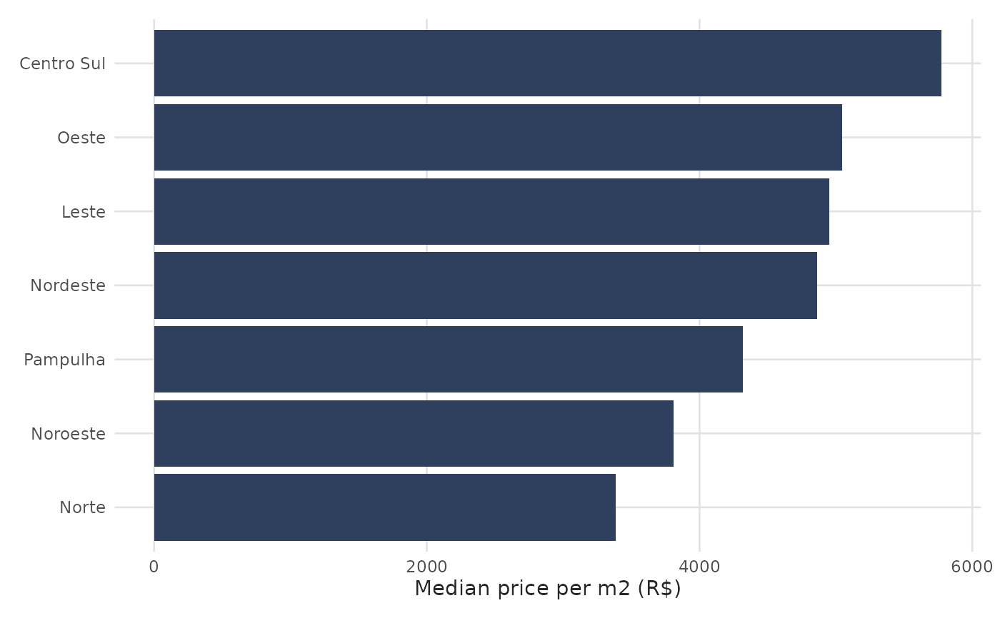

Sales price data at a region level for major Brazilian cities. Contains contract prices per square meter, allowing comparison across cities and zones.
Format
sales_report
A data frame with 272 observations across multiple cities and zones:
- date
Date of the observation (first day of month)
- name_muni
Name of the municipality (city). Includes: Belo Horizonte, Rio de Janeiro, and São Paulo
- name_zone
Name of the zone within the city
- price_m2
Median contract price per square meter (R$/m²)
Source
QuintoAndar (Sales Report 2020-Q1/2023-Q3). https://publicfiles.data.quintoandar.com.br/sale_report/RelatorioCV_4T_2022.pdf
Examples
# Compare contract prices across zones
library(ggplot2)
bhe_sales <- subset(sales_report, name_muni == "Belo Horizonte" & date == max(date))
bhe_sales$name_zone <- factor(
bhe_sales$name_zone,
levels = bhe_sales$name_zone[order(bhe_sales$price_m2)]
)
ggplot(bhe_sales, aes(x = price_m2, y = name_zone)) +
geom_col(fill = benvi_palette("benvi_blue")[3]) +
labs(x = "Median price per m2 (R$)", y = NULL) +
theme_benvi(base_family = "sans")
